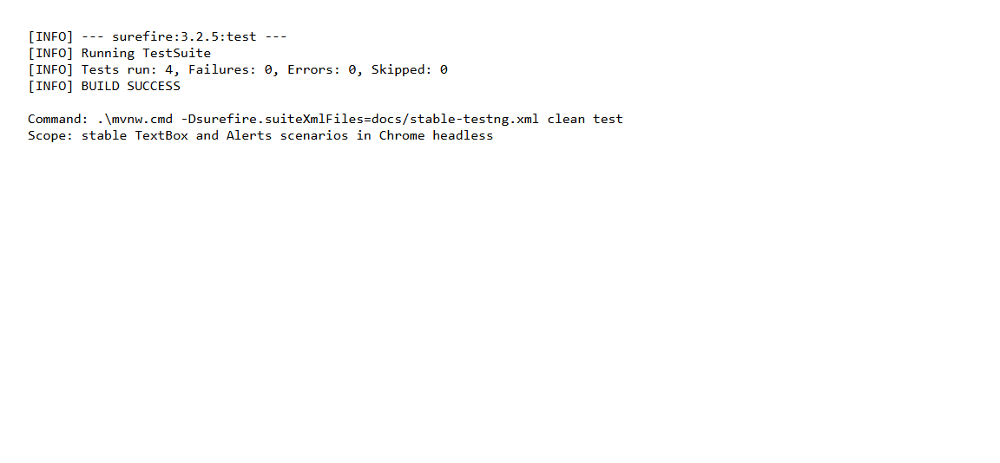
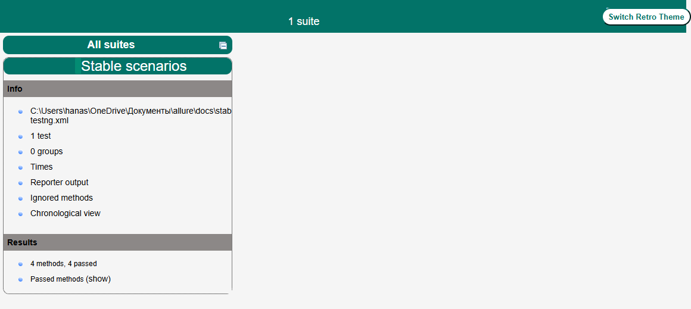
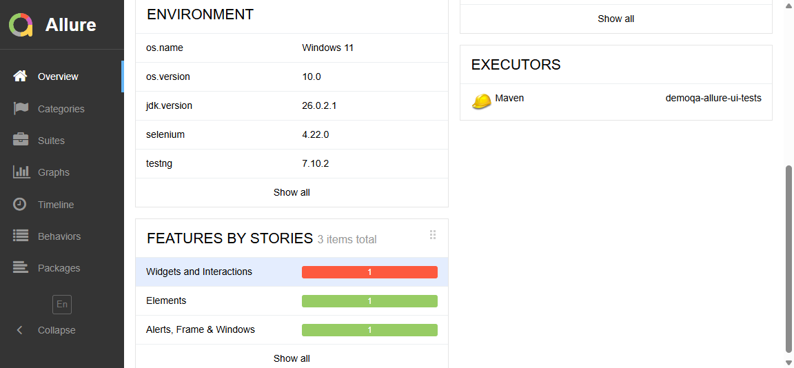
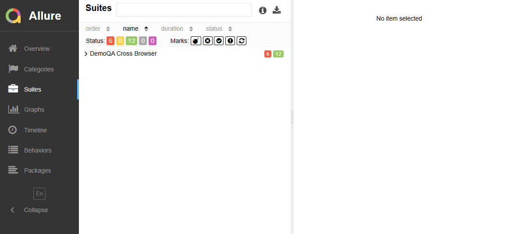
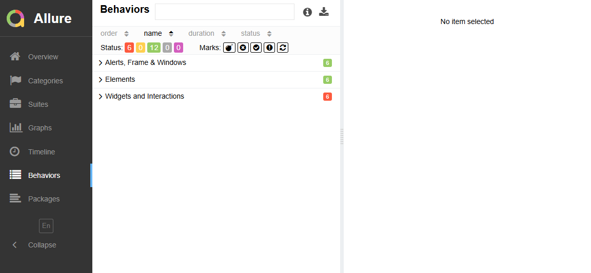
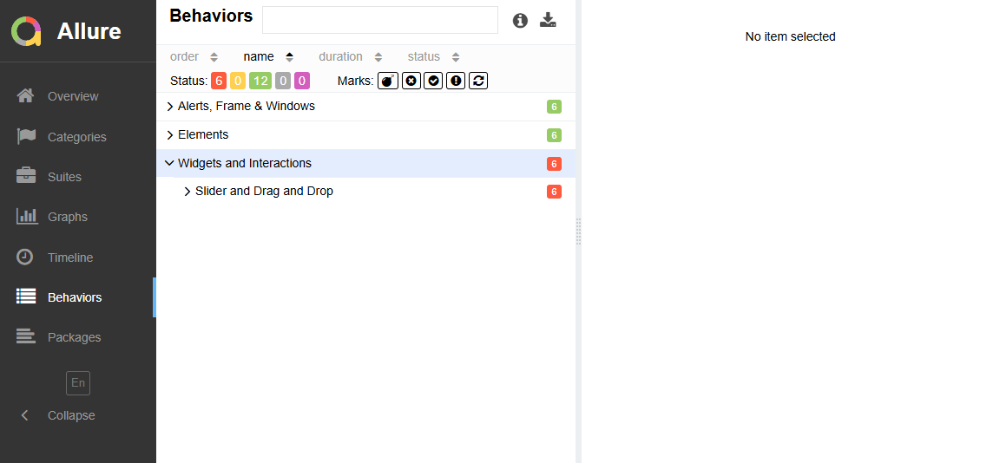
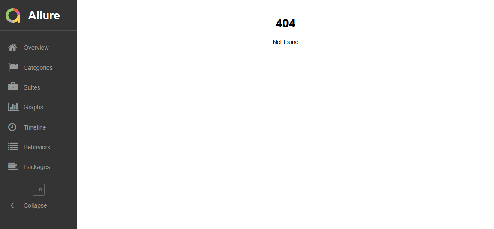

Практическое занятие №14-16
Дисциплина: автоматизация тестирования
Группа: не указана в исходных данных
ФИО: не указано в исходных данных
Репозиторий: thunderkite/allure
Рабочая ветка: feature/student_demoqa_allure
Дата: 07.10.2026
| Компонент | Значение |
|---|---|
| Операционная система | Windows 11, версия ОС 10.0, архитектура amd64. |
| JDK | JDK 26.0.2.1. В проекте задан минимальный уровень компиляции Java 17. |
| Maven | Apache Maven Wrapper 3.9.9, запуск через mvnw.cmd. |
| Браузеры | Google Chrome 154.0.8037.98; Microsoft Edge 154.0.4258.53; Firefox в системе не обнаружен, поэтому Firefox-поток не может считаться воспроизведенным на данном компьютере. |
| Драйверы | Selenium Manager, встроенный в Selenium 4.22.0. Отдельное хранение chromedriver/geckodriver/msedgedriver в проекте не используется. |
| Selenium | Selenium Java 4.22.0. |
| TestNG | TestNG 7.10.2; Surefire 3.2.5. |
| Allure | Allure TestNG 2.25.0; Maven-плагин Allure 2.12.0, генератор отчета 2.20.1. |
| Режим запуска | Headless. В основном suite Chrome, Firefox и Edge запускаются параллельно: parallel="tests", thread-count="3". |
Таймаут ожиданий в BaseTest равен 15 секундам. Для действий используются явные ожидания Selenium: видимость элемента и кликабельность элемента. Неявные ожидания и Thread.sleep не применяются.
| Сценарий и цель | Шаги | Ожидаемый результат |
|---|---|---|
| Text Box: валидная форма. Проверить отправку корректных данных. | Открыть demoqa.com/text-box; заполнить имя, email и адреса; нажать Submit. | На странице отображается блок #output. |
| Text Box: невалидный email. Проверить встроенную в браузер валидацию. | Открыть Text Box; ввести not-an-email; проверить свойство validationMessage поля email. | У поля #userEmail присутствует сообщение валидации. |
| Alerts: отмена confirm. | Открыть страницу Alerts; нажать confirm; дождаться alert; выполнить dismiss. | #confirmResult содержит результат отмены. |
| Alerts: prompt с текстом. | Открыть Alerts; нажать prompt; дождаться alert; ввести demo и подтвердить. | #promptResult содержит текст demo. |
| Slider: установить значение. Проверить изменение range input. | Открыть страницу Slider; найти input[type='range']; задать значение 75 через JavaScript и отправить событие change. | Свойство value элемента #sliderValue равно 75. |
| Drag and Drop: переместить элемент. | Открыть страницу Droppable; найти источник #draggable и цель #droppable; выполнить Selenium Actions dragAndDrop. | Текст цели меняется на Dropped!. |
В Page Object используются устойчивые идентификаторы: #userName, #userEmail, #currentAddress, #permanentAddress, #submit, #output, #confirmButton, #promtButton, #confirmResult, #promptResult, #sliderValue, #draggable и #droppable. Для Slider используется CSS-селектор input[type='range']. Метод visible ожидает видимость, метод click дополнительно ожидает кликабельность, метод type очищает поле после ожидания видимости.
| Объект | Ссылка или значение |
|---|---|
| Репозиторий | https://github.com/thunderkite/allure |
| Feature-ветка | feature/student_demoqa_allure |
| Pull Request | Фактический PR в репозитории не создан. Рабочая ссылка для создания PR: сравнить feature/student_demoqa_allure с main. |
| Последний коммит | 3cea6dcb03af45810510fa4dec650ad98eee0809 — «Исправить вызов JavaScript в странице Slider». |
Полный запуск командой .�mvnw.cmd clean test (без сокращения набора) выполнил 18 тестов: 12 пройдено, 6 завершились ошибкой. Ошибки воспроизводятся в Slider и Drag and Drop. Отдельный стабильный набор Text Box и Alerts в Chrome выполнен успешно: 4 теста, 0 ошибок.


target/surefire-reports после успешного стабильного набора.




Статический Allure-отчет после генерации доступен по адресу target/site/allure-maven-plugin/index.html. Исходные Allure-результаты находятся в target/allure-results, Surefire-отчеты — в target/surefire-reports.
Базовые сценарии Text Box и Alerts устойчивы: они используют идентификаторы элементов, явные ожидания и изолированный WebDriver на каждый тестовый метод. Полный набор воспроизводим частично: Slider и Drag and Drop стабильно падают с одинаковыми результатами во всех трех потоках, поэтому проблема относится к реализации взаимодействия, а не к случайному отличию браузеров.
Существенное отличие среды заключается в доступности браузеров: Chrome и Edge обнаружены в системе, Firefox отсутствует. Для полноценного сравнения браузеров нужно установить Firefox и повторить запуск в одинаковом окружении. Кроме того, Selenium 4.22.0 предупреждает об отсутствии CDP-реализации для Chromium 154; следует обновить Selenium до версии с поддержкой актуального CDP.
input вместе с change либо штатное управление клавишами.Actions.dragAndDrop на последовательность moveToElement, clickAndHold, moveToElement с offset и release; после действия ждать текст Dropped!, а не только видимость цели.environment.properties из нескольких потоков без синхронизации: сейчас значение browser может соответствовать последнему записавшему процессу.